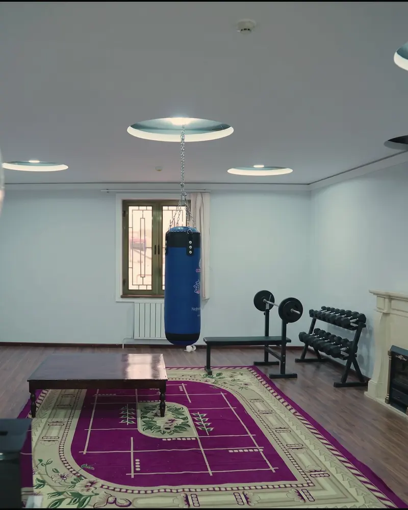
Толори варзиш
Вобастагӣ ба бадан низ зарба мезанад, бинобар ин дар тартиби рӯз варзиш ҳаст. Дар толори варзиш шиддатро метавон баровард, на ин ки дар дарун нигоҳ дошт.
Агар шумо ин мактубро барои он мехонед, ки ба шахси наздикатон ё ба худатон чӣ гуна кӯмак карданро намедонед — шумо аллакай қадами аввалро гузоштед.
Мо — маркази барқарорсозии Vector, аввалин маркази реабилитатсия дар Самарқанд бо иҷозатномаи Вазорати тандурустии Ҷумҳурии Ӯзбекистон барои табобати статсионарӣ ҳастем. Ба шахсони гирифтори вобастагӣ аз машрубот, маводи мухаддир ва қиморбозӣ ва ба оилаҳои онҳо кӯмак мерасонем. Мо дар ёфтани роҳи наҷот ёрӣ медиҳем.
Ба мо занг занед ё нависед, мо шуморо гӯш мекунем: оромона, суханатонро набурида ва бе маломат. Мефаҳмонем, ки минбаъд чӣ бояд кард.
Агар шумо хаста шуда бошеду чӣ тавр бас карданро надонед — мо кӯмак мекунем.
«Ман наметавонам». — «Мо метавонем».
Шояд хавотир бошед, ки шуморо ба қайд мегиранд. Не, мо ба қайди наркологӣ намегирем. Ҳамаи зангҳо махфианд, будубош дар марказ низ махфӣ аст. Номатонро гуфтан шарт нест, маълумотро ба ҳеҷ кас намедиҳем.
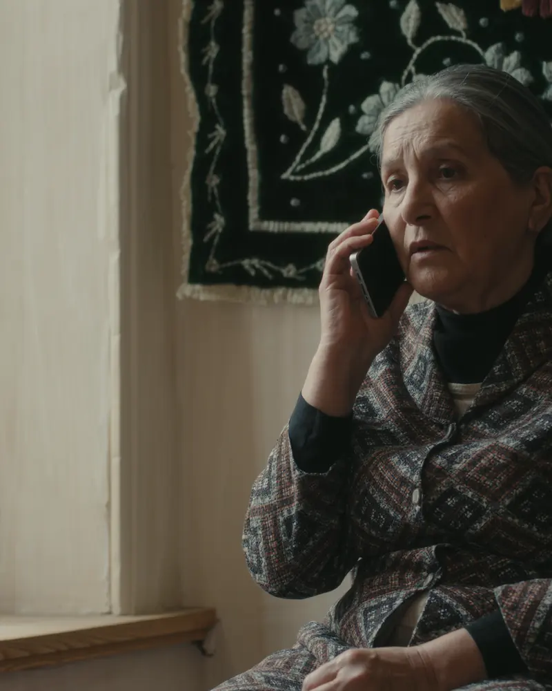
Вохӯрии аввал — сӯҳбати ором бо мутахассис аст. Машварат ройгон буда, шуморо ба чизе ӯҳдадор намекунад.
Дар он мо барнома, реҷаи рӯз ва нархро муҳокима мекунем. Ин ҳама аз ҳолати шахс вобаста аст, бинобар ин танҳо ҳангоми вохӯрии рӯ ба рӯ мегӯем.
Метавонед бе шахси наздикатон танҳо биёед. Аксар вақт аввал аҳли оила меояд.
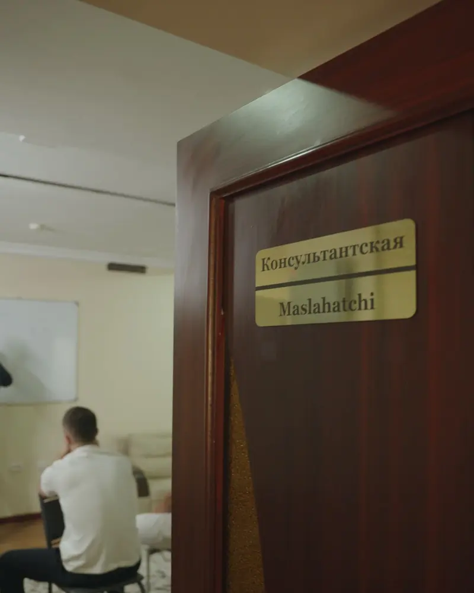
Агар ӯ мушкилро эътироф накунад, на ӯро ва на худатонро айбдор накунед. Инкор — нишонаи маъмули беморӣ аст, на якравӣ.
Мутахассиси мо метавонад ба хонаатон биёяд ва тавре сӯҳбат кунад, ки шахс худаш ба кӯмак розӣ шавад. Ҳеҷ касро маҷбуран намебаранд: табобат танҳо бо розигии хаттӣ оғоз мешавад, инро қонуни Ӯзбекистон низ талаб мекунад.
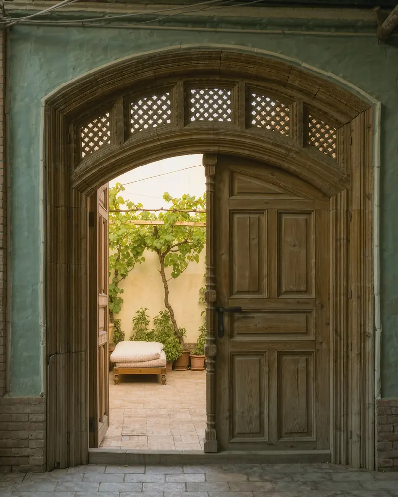
Ин яке аз ҳуҷраҳоест, ки шахс дар давоми барнома дар он зиндагӣ мекунад. Мо марказро на мисли беморхона, балки мисли хона ташкил кардем, зеро дар ҷои ором шифо ёфтан осонтар аст.
Ҳуҷраҳо барои 3–4 нафар, дар ҳар кадомаш ташноб ва кондитсионери алоҳида ҳаст. Дар як рӯз се вақт хӯрок.
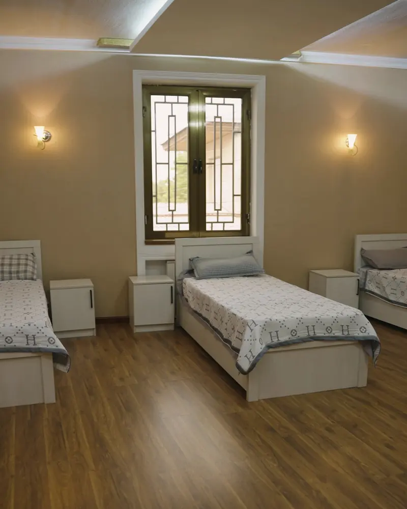
Ҳар рӯз — машғулиятҳои гурӯҳӣ ва кори инфиродӣ бо равоншинос аз рӯи барномаи «12 қадам». Дар гурӯҳ шахс дигаронро мешунавад ва мефаҳмад, ки танҳо нест.
Барномаро мутахассисони даъватшуда аз Қазоқистон пеш мебаранд: равоншиносони клиникӣ, наркологҳо ва аддиктологҳо.
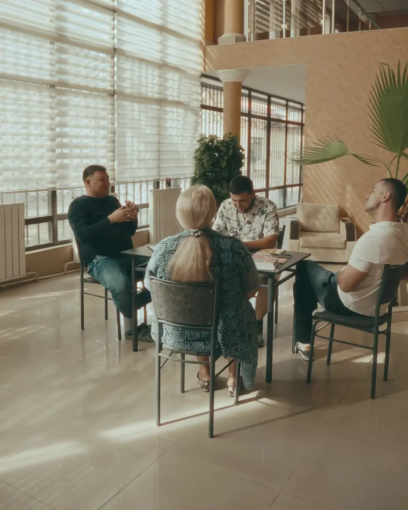

Вобастагӣ ба бадан низ зарба мезанад, бинобар ин дар тартиби рӯз варзиш ҳаст. Дар толори варзиш шиддатро метавон баровард, на ин ки дар дарун нигоҳ дошт.
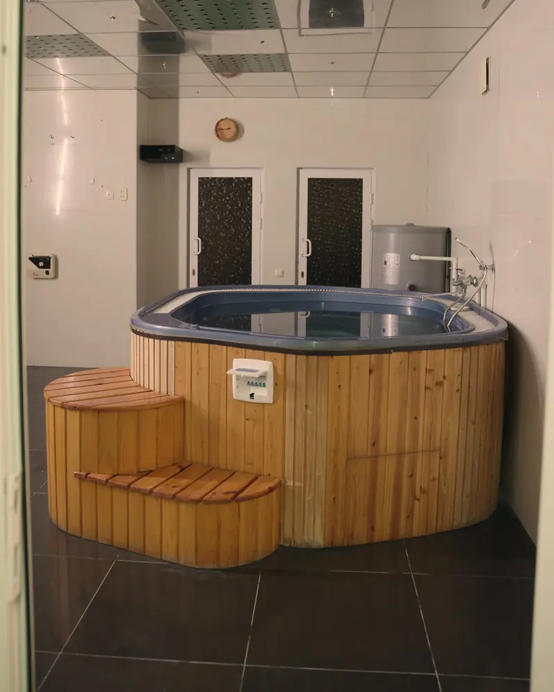
Гармӣ, об ва истироҳат — чизҳои оддие, ки ба барқароршавӣ кӯмак мекунанд.
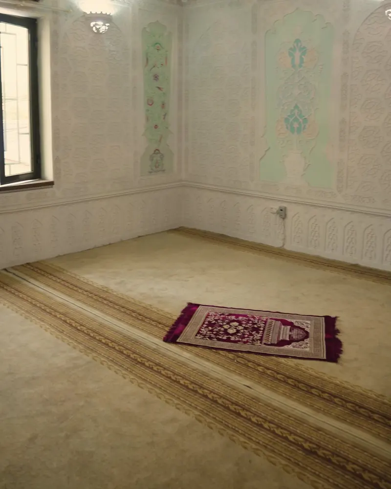
Барои касоне, ки ин барояшон муҳим аст, ҳуҷраи ороми намоз ҳаст. Дар ин ҷо метавон бо худ танҳо монд.
Вобастагии шахси наздик тамоми оиларо хаста мекунад. То даме ки ӯ дар ҷои бехатар аст, шумо низ метавонед кӯмак гиред.
Ҳар шанбе соати 11:00 дар офиси мо равоншиносон барои хешовандон вохӯриҳо мегузаронанд. Зангҳо ва вохӯриҳо бо оиларо мо бо тавсияи мутахассисон ташкил мекунем, вақте ки ин барои барқароршавӣ фоиданок аст.
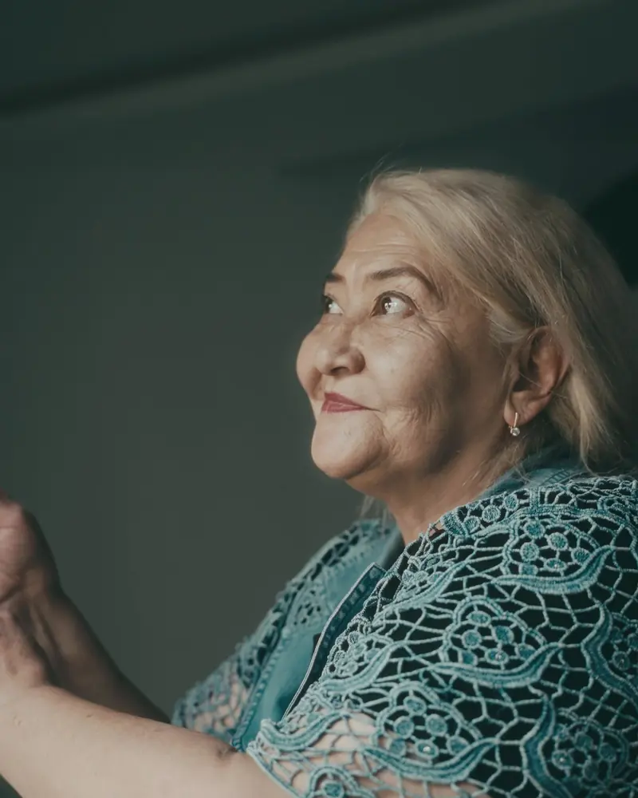
Дар ҳавлии марказ боғ ва фаввора ҳаст. Дар ин ҷо метавон дар оромӣ нишаст ва дар бораи оянда фикр кард.
Баъди курс мо хайрухуш намекунем: ҳамроҳӣ мекунем, то ҳушёрӣ дар хона низ пойдор монад.
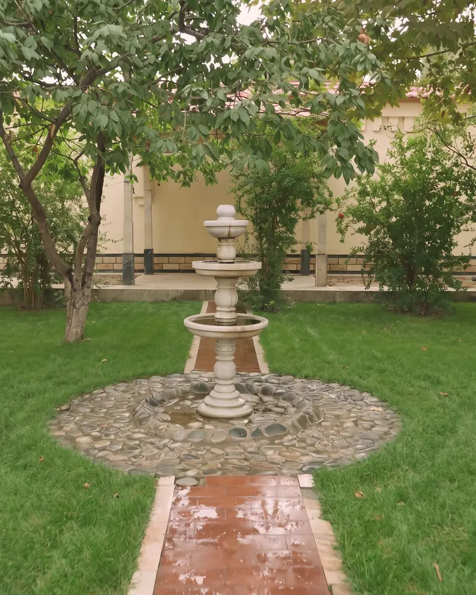
Муассиси марказ ва ҳамоҳангсози барнома — Темирхан Нуржан Кадирханович, таҷрибаи ӯ беш аз 10 сол аст.
Мо чеҳраи мутахассисони ҷамоаро нишон медиҳем, зеро донистан муҳим аст, ки шахси наздикатонро ба кӣ бовар карда месупоред.
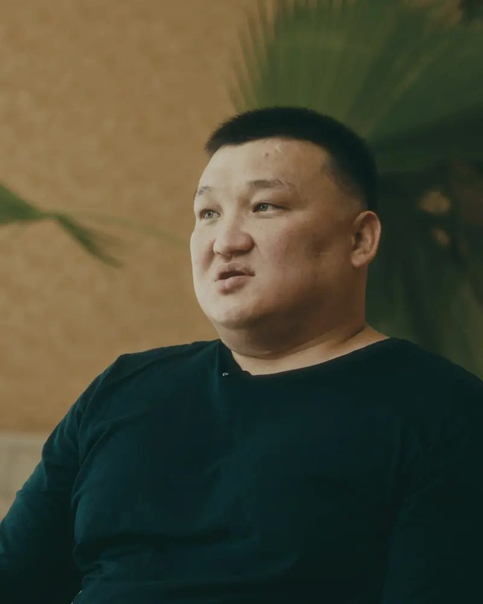
Танҳо ба сухан бовар кардан душвор аст, бинобар ин ҳуҷҷатҳоро нишон медиҳем.
Марказ бо иҷозатномаи №1857962-и Вазорати тандурустии Ҷумҳурии Ӯзбекистон барои фаъолияти тиббӣ кор мекунад: психиатрия, ташхис, машварат ва табобат дар статсионар. Иҷозатнома то 17.09.2031 эътибор дорад. Мо аввалин маркази реабилитатсия дар Самарқанд бо чунин иҷозатнома ҳастем. Дар он барои санҷиш QR-код ҳаст, суроға дар нусхаҳо пинҳон карда шудааст.
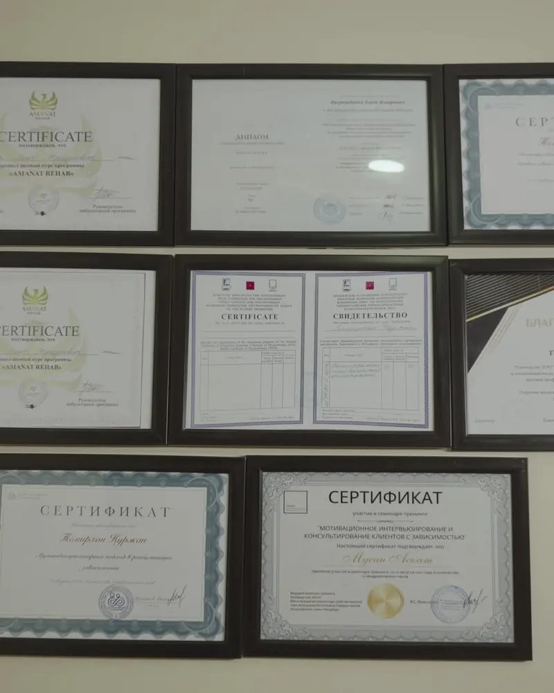
Машварат ройгон аст, бе маломат ва бе ӯҳдадорӣ. Мо танҳо гӯш мекунем.
Бо эҳтиром,
ҷамоаи маркази Vector
P.S.Занг шуморо ба чизе ӯҳдадор намекунад. Мо ба қайд намегирем ва маълумотро ба ҳеҷ кас намедиҳем.
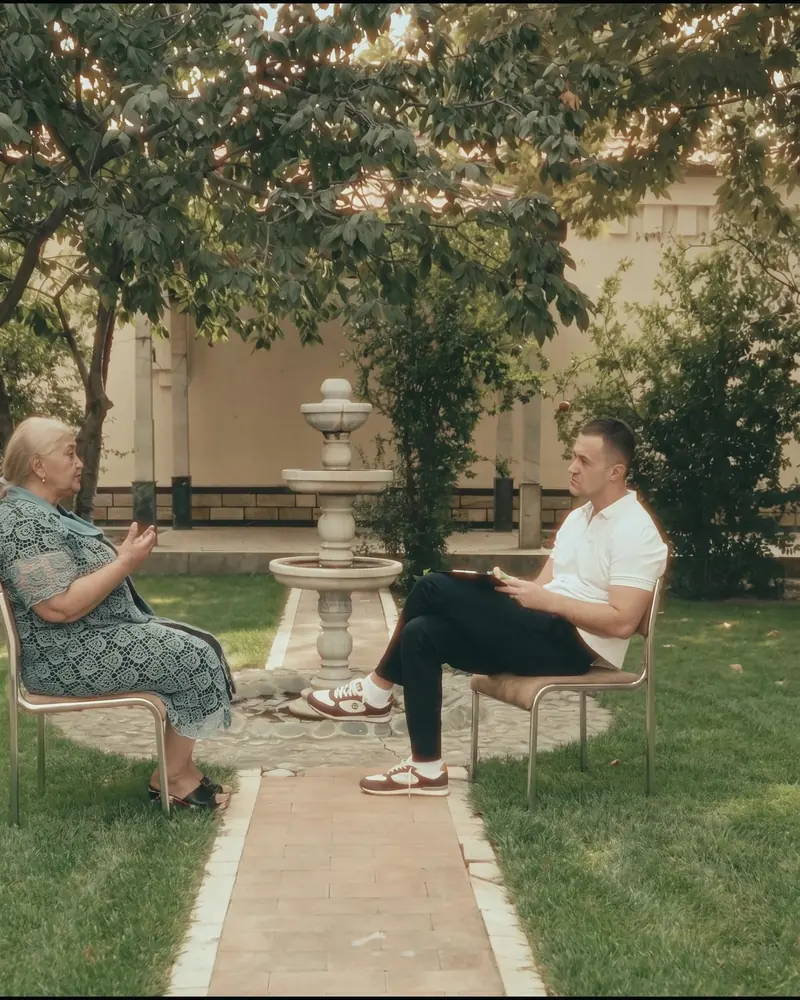